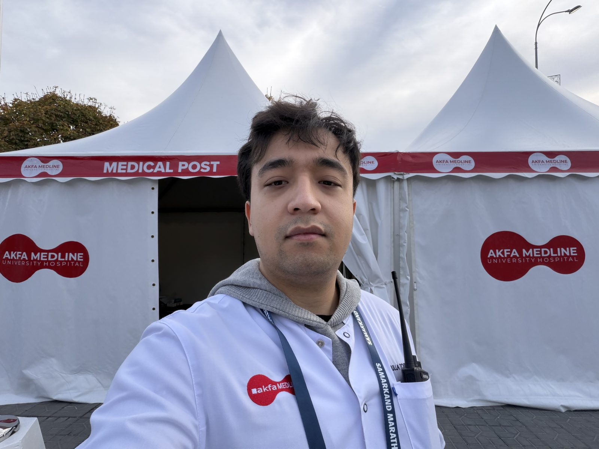
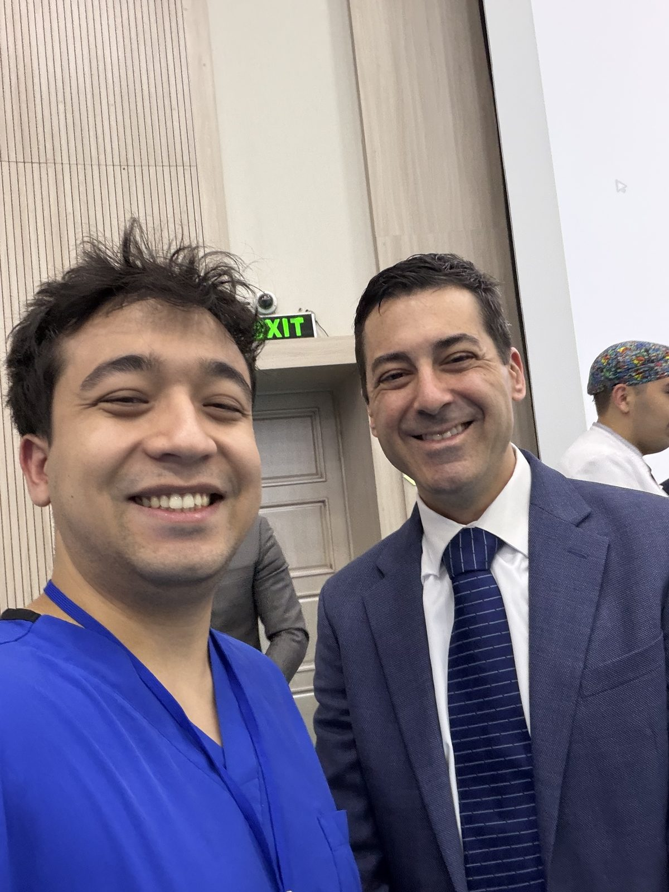
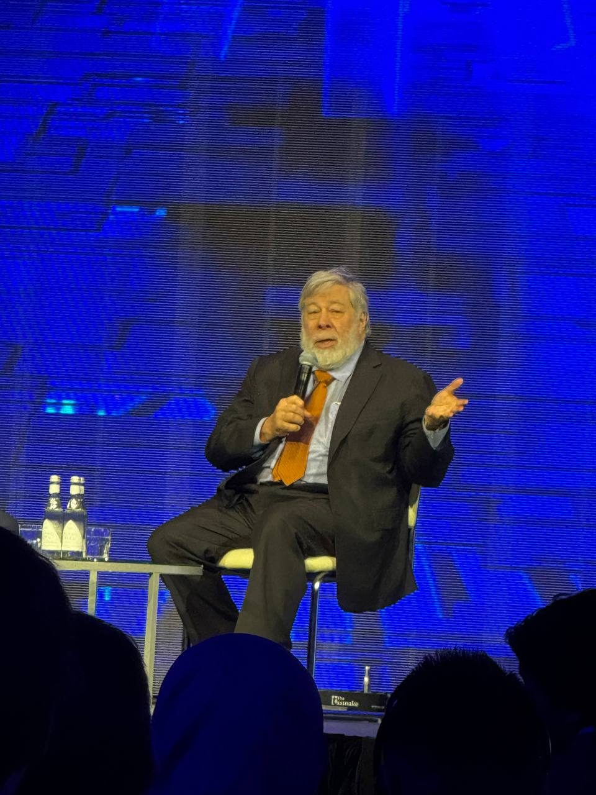

Yoʻldagi
qaydlar
Konferensiyalar, klinik tayyorgarlik va tibbiy faoliyatimdagi lahzalar: suratlar va qisqa hikoyalar.
10 ta yozuv

Cleveland Clinicdan doktor Jeremy Lipman bilan uchrashuv
Cleveland Clinicdan doktor Jeremy Lipmanning jarrohlik taʼlimi haqidagi maʼruzasi: baholash oʻqishni qanday yoʻnaltiradi va ishonib topshiriladigan kasbiy faoliyatlar nima.
Travmatologiya va ortopediyada zamonaviy texnologiyalar
Artroskopiya portlari boʻyicha maʼruza, artroplastika robotini sinab koʻrish va Oʻzbekiston travmatolog-ortopedlari anjumanida hamkasblar bilan tanishuv.
Cleveland Clinic bosh direktori Akfa Medlineda
Cleveland Clinic bosh direktori doktor Tomislav Mihaljevic klinikamizga tashrif buyurib, shifokorlar va rezidentlar bilan tibbiyot va tibbiy taʼlim kelajagi haqida suhbatlashdi.
Seuldagi KUA 2025 da maʼruza
Koreya urologiya assotsiatsiyasining yillik yigʻilishida 64 ta bolalar supine mini PCNL holati boʻyicha ogʻzaki maʼruzam.
Robotik jarrohlik pulti ortida
Klinik rotatsiya davomida jarrohlik roboti pultida mashgʻulot va eng soʻnggi da Vinci jarrohlik tizimi bilan ishlash.
Tibbiyot maktabini tamomladim
Central Asian University tibbiyot maktabi bitiruv marosimida MD diplomini olish.
Toshkentda CAEC25 ni tashkil etishda ishtirok
Markaziy Osiyo endourologiya kongressini tashkil etish ishlari va prof. Peter Alken bilan uchrashuv.
CAU Tech Summit '25 da Steve Wozniak
Steve Wozniak Toshkentdagi CAU Tech Summit '25 da nutq soʻzladi, chiqishidan keyin u bilan guruh surati tushdik.